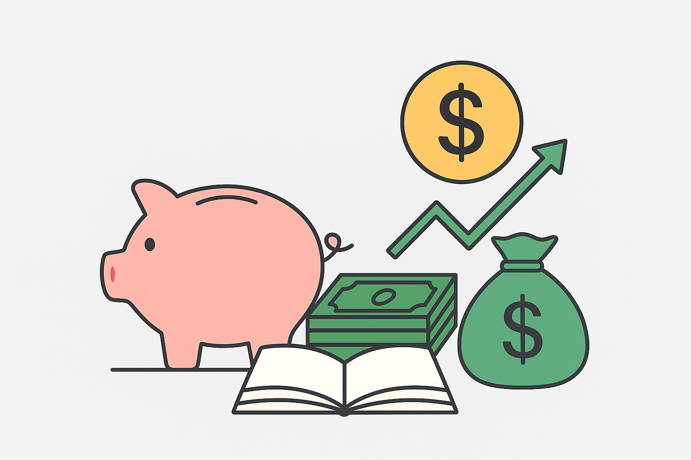

CONTROLE FINANCEIRO PESSOAL
Como montar um orçamento simples e funcional
O primeiro passo para conquistar estabilidade financeira é conhecer bem suas receitas e despesas. Montar um orçamento não é apenas anotar números, mas entender o comportamento do seu dinheiro e criar uma relação mais consciente com ele. Um bom orçamento deve ser realista, simples e adaptável à sua rotina.
Comece registrando todas as suas fontes de renda e listando seus gastos fixos (como moradia, transporte, contas e alimentação) e variáveis (como lazer, compras e imprevistos). Ao visualizar tudo de forma clara, seja em um caderno, planilha ou aplicativo, fica mais fácil perceber excessos e definir metas de economia.
Métodos de controle financeiro
Não existe um método único para controlar suas finanças. O ideal é escolher a forma que mais se adapta ao seu perfil e manter a constância no acompanhamento.
- Planilha eletrônica: ideal para quem gosta de analisar números e gerar gráficos. Permite acompanhar entradas e saídas de forma detalhada.
- Aplicativos financeiros: práticos e modernos, possibilitam registrar gastos em tempo real e até sincronizar contas bancárias.
- Caderno de controle: ótimo para quem prefere o método tradicional. O ato de escrever ajuda na percepção dos hábitos de consumo.
Dicas práticas para reduzir gastos sem sofrimento
Economizar não significa abrir mão do que é importante para você. O segredo está em equilibrar suas escolhas e adotar hábitos mais conscientes. Veja algumas estratégias simples:
- Evite compras por impulso: pratique a “regra das 24 horas”. Espere um dia antes de comprar algo não essencial e reflita se a necessidade ainda existe.
- Reavalie serviços contratados: cancele assinaturas e planos que não utiliza com frequência. Pequenas economias somadas geram grandes resultados.
- Planeje suas refeições: cozinhar em casa é mais econômico e saudável do que comer fora com frequência.
- Defina metas de economia: comece com objetivos pequenos, como guardar 10% da renda, e aumente gradualmente.
Lembre-se: o controle financeiro não é uma limitação, e sim uma ferramenta de liberdade. Quanto mais você entende o seu dinheiro, mais autonomia conquista para realizar seus planos e viver com tranquilidade.
